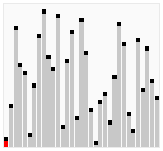

Сортування гребінцем
 Сортування гребінцем — спрощений алгоритм сортування, розроблений Влодеком Добошєвічем у 1980 році, і пізніше заново слідженим та популяризованим Стефаном Лакеєм та Річардом Боксом , котрі написали про нього в журналі Byte Magazine у квітні 1991 р. Сортування гребінцем є поліпшенням алгоритму сортування бульбашкою, і конкурує у швидкодії з алгоритмом Швидке сортування. Основна його ідея полягає в тому, щоб усунути так званих «черепах», або малих значень ближче до кінця списку, оскільки у сортування бульбашкою вони сильно уповільнюють процес сортування. (Кролики та великі сортування на початку списку у сортуванні бульбашкою не являють собою проблеми). У сортуванні бульбашкою, коли два елементи порівнюються, вони завжди мають розрив (відстань один від одного) рівну 1. Основна ідея сортування гребінцем полягає у тому, що цей розрив може бути більший одиниці. Розрив починається зі значення, що рівне довжині списку, поділеного на фактор зменшення, і список сортується з урахуванням цього значення (при необхідності воно заокруглюється до цілого). Потім розрив знову ділиться на фактор розриву, і список продовжує сортуватись з новим значенням, процес продовжується доти, доки розрив рівний 1. Далі список сортується з розривом рівним 1 доти, доки не буде повністю відсортований. Таким чином, фінальний етап сортування аналогічний такому ж у сортуванні бульбашкою, однак, до цього «черепах» усувається.
Реалізація Java:
private static int newGap(int gap)
{
gap = gap * 10 / 13;
if(gap == 9 || gap == 10)
gap = 11;
if(gap < 1)
return 1;
return gap;
}
private static void sort(int a[])
{ int gap = a.length;
boolean swapped;
do {
swapped = false;
gap = newGap(gap);
for(int i = 0; i < (a.length - gap); i++) {
if(a[i] > a[i + gap]){
swapped = true;
int temp = a[i];
a[i] = a[i + gap];
a[i + gap] = temp;
}
}
} while(gap > 1 || swapped);
}
Сортування бульбашкою
 Сортування обміном або сортування бульбашкою є простим алгоритмом сортування. Алгоритм працює таким
чином — у поданому наборі даних (списку чи масиві)
порівнюються два сусідні елементи. Якщо один з елементів, не відповідає критерію сортування (є
більшим, або ж, навпаки, меншим за свого сусіда),
то ці два елементи міняються місцями. Прохід по списку продовжується доти, доки дані не будуть
відсортованими. Алгоритм отримав свою назву від того,
що процес сортування за ним нагадує поведінку бульбашок повітря у резервуарі з водою. Оскільки для
роботи з елементами масиву він використовує лише
порівняння, це сортування на основі порівнянь.
Сортування обміном або сортування бульбашкою є простим алгоритмом сортування. Алгоритм працює таким
чином — у поданому наборі даних (списку чи масиві)
порівнюються два сусідні елементи. Якщо один з елементів, не відповідає критерію сортування (є
більшим, або ж, навпаки, меншим за свого сусіда),
то ці два елементи міняються місцями. Прохід по списку продовжується доти, доки дані не будуть
відсортованими. Алгоритм отримав свою назву від того,
що процес сортування за ним нагадує поведінку бульбашок повітря у резервуарі з водою. Оскільки для
роботи з елементами масиву він використовує лише
порівняння, це сортування на основі порівнянь.
Реалізація Java:
public static void bubbleSort(int[] array) {
boolean sorted = false;
int temp;
while(!sorted) {
sorted = true;
for (int i = 0; i < array.length - 1; i++) {
if (array[i] > array[i+1]) {
temp = array[i];
array[i] = array[i+1];
array[i+1] = temp;
sorted = false;
}
}
}
}
Сортування змішуванням
 Сортування змішуванням — один із різновидів алгоритму сортування бульбашкою.
Відрізняється від сортування бульбашкою тим,
що сортування відбувається в обох напрямках, міняючи напрямок при кожному проході. Цей алгоритм лише
трішки складніший за сортування бульбашкою,
однак, вирішує так звану проблему «черепах».
Сортування змішуванням мало чим відрізняється від сортування бульбашкою. Єдина його відмінність у
тому, що замість багаторазового проходження через
список знизу вгору, він проходить по черзі знизу вгору і згори вниз. Він може досягати трохи вищої
ефективності, ніж алгоритм сортування бульбашкою.
Причиною цьому є те, що алгоритм сортування бульбашкою проходить по списку лише в одному напрямі, а
тому за одну ітерацію елементи списку можна перемістити
лише на один крок.
Наприклад, для того, щоб відсортувати список (2,3,4,5,1), алгоритму сортування змішуванням достатньо
лише одного проходу, у той час, як алгоритму
сортування бульбашкою знадобиться чотири проходи. Однак, один прохід сортування змішуванням слід
рахувати за два проходи сортування бульбашкою. Зазвичай,
сортування змішуванням удвічі швидше за сортування бульбашкою.
Іншою можливою оптимізацією є запам'ятовування попередніх перестановок. У наступній ітерації,
перестановки не повторюватимуться, а тому алгоритм матиме коротші
проходи по списку.
Сортування змішуванням — один із різновидів алгоритму сортування бульбашкою.
Відрізняється від сортування бульбашкою тим,
що сортування відбувається в обох напрямках, міняючи напрямок при кожному проході. Цей алгоритм лише
трішки складніший за сортування бульбашкою,
однак, вирішує так звану проблему «черепах».
Сортування змішуванням мало чим відрізняється від сортування бульбашкою. Єдина його відмінність у
тому, що замість багаторазового проходження через
список знизу вгору, він проходить по черзі знизу вгору і згори вниз. Він може досягати трохи вищої
ефективності, ніж алгоритм сортування бульбашкою.
Причиною цьому є те, що алгоритм сортування бульбашкою проходить по списку лише в одному напрямі, а
тому за одну ітерацію елементи списку можна перемістити
лише на один крок.
Наприклад, для того, щоб відсортувати список (2,3,4,5,1), алгоритму сортування змішуванням достатньо
лише одного проходу, у той час, як алгоритму
сортування бульбашкою знадобиться чотири проходи. Однак, один прохід сортування змішуванням слід
рахувати за два проходи сортування бульбашкою. Зазвичай,
сортування змішуванням удвічі швидше за сортування бульбашкою.
Іншою можливою оптимізацією є запам'ятовування попередніх перестановок. У наступній ітерації,
перестановки не повторюватимуться, а тому алгоритм матиме коротші
проходи по списку.
Реалізація Java:
public static void cocktailSort(int[] a) {
int size = a.length;
boolean swapped = false;
for (int k = size - 1; k > 0; k--) {
swapped = false;
for (int i = k; i > size - 1 - k; i--)
if (a[i] < a[i-1]) {
// swap
int temp = a[i];
a[i] = a[i-1];
a[i-1] = temp;
swapped = true;
}
for (int i = size - k; i < k; i++)
if (a[i] > a[i+1]) {
// swap
int temp = a[i];
a[i] = a[i+1];
a[i+1] = temp;
swapped = true;
}
if (!swapped)
break;
}
}